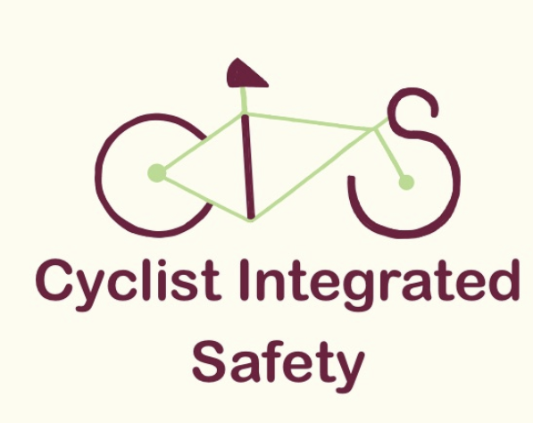

01
Rear-Approach Radar
Identify vehicles approaching from behind and produce directional warnings.
Cyclist Integrated Safety (CIS) is a student-developed smart bicycle system designed to improve rider awareness through vehicle detection, navigation, and real-time safety alerts.

Developed by Computer Engineering students at the University of California, Santa Barbara, CIS aims to combine rear-approach radar sensing, fall detection, GPS navigation, programmable turn signals, and clear rider alerts. Our planned system pairs bike-mounted electronics with an Android app and handlebar display.
These features describe our capstone design goals and are currently under development.
Identify vehicles approaching from behind and produce directional warnings.
Use motion sensor data to identify possible crashes and support an emergency-contact workflow.
Plan rides and transmit speed and turn information from an Android phone to the bike.
Provide rider-controlled, programmable LED turn indicators.
Present speed, upcoming turns, and left, behind, and right hazard indicators.
Offer audible warnings and a rider-controlled bell through dedicated onboard audio hardware.
Our planned architecture divides navigation from safety-critical sensing and physical output control.
Radar and IMU sensing are designed to support local alerts even when the phone is disconnected. Hardware integration and performance testing are ongoing.
UCSB ECE 189 · 2026–2027
Finalize architecture, choose components, build app mockups, and begin individual hardware tests.
Connect sensors, microcontroller, app, and outputs into a working prototype for controlled testing.
Improve reliability, test mounting and outdoor readability, and prepare the final demonstration.